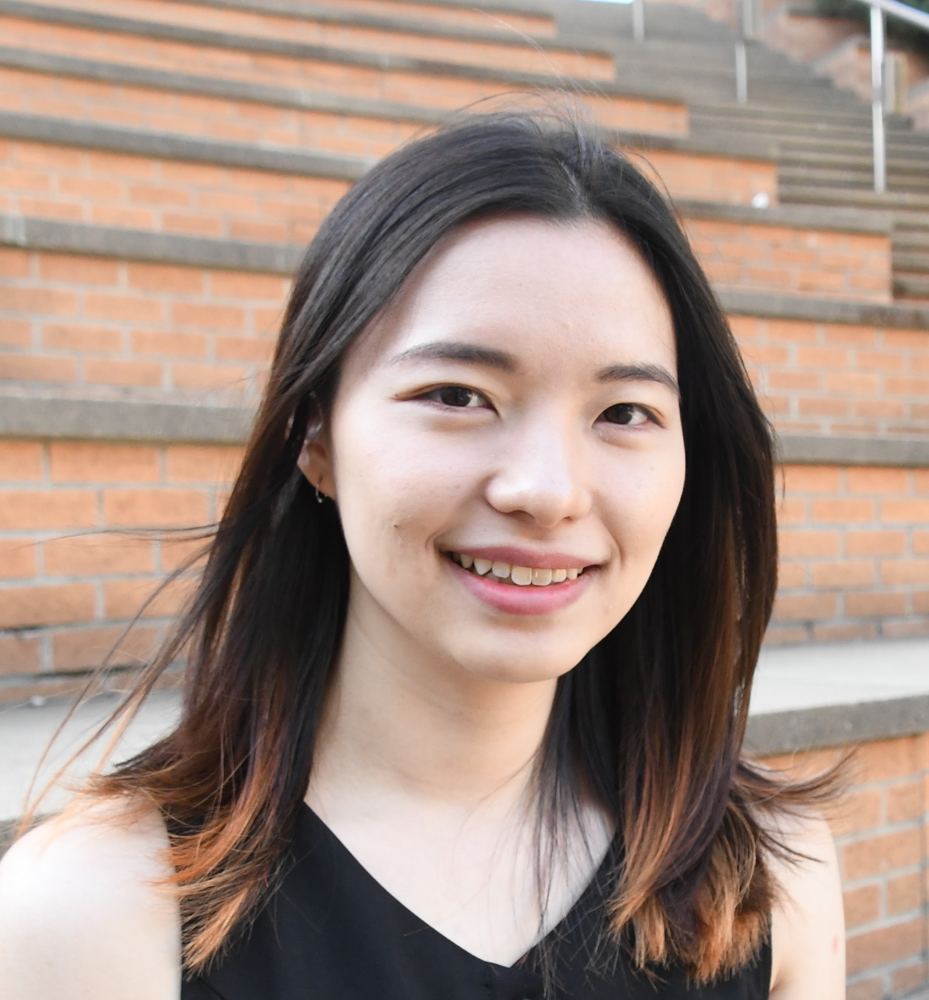
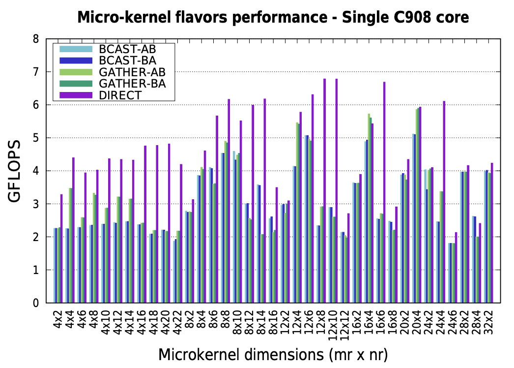
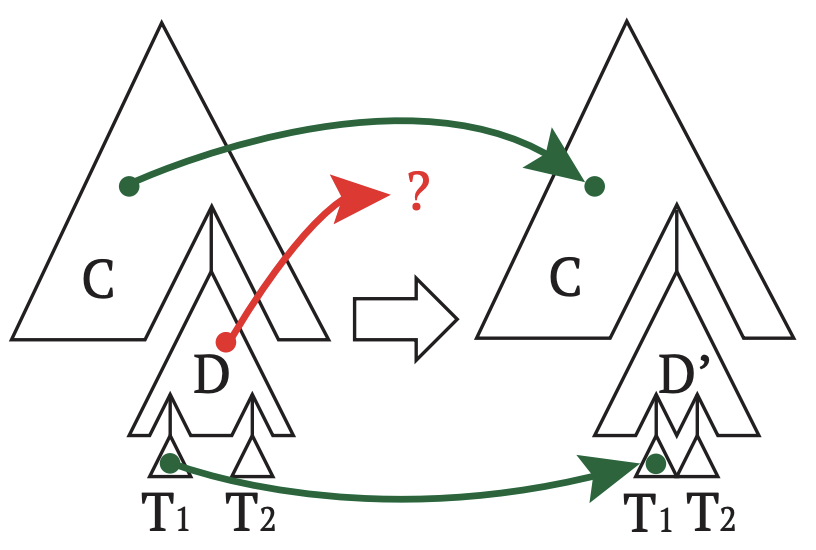
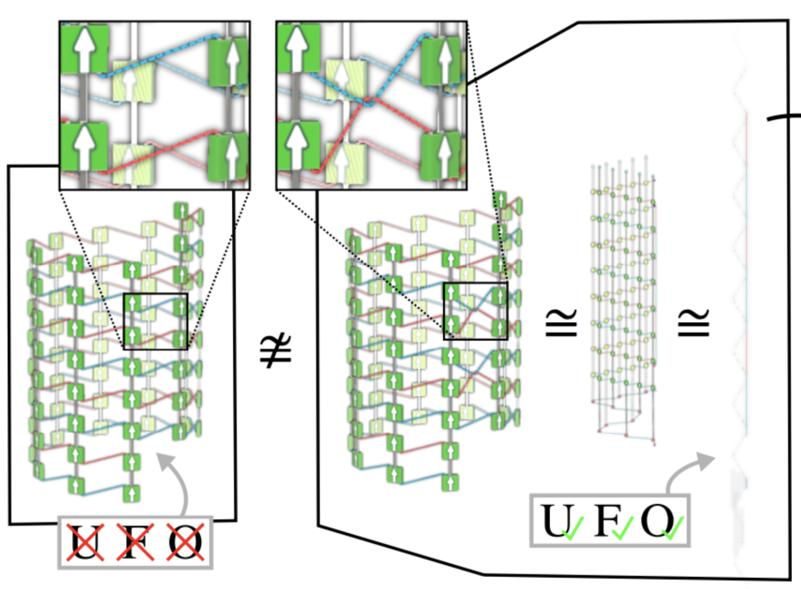
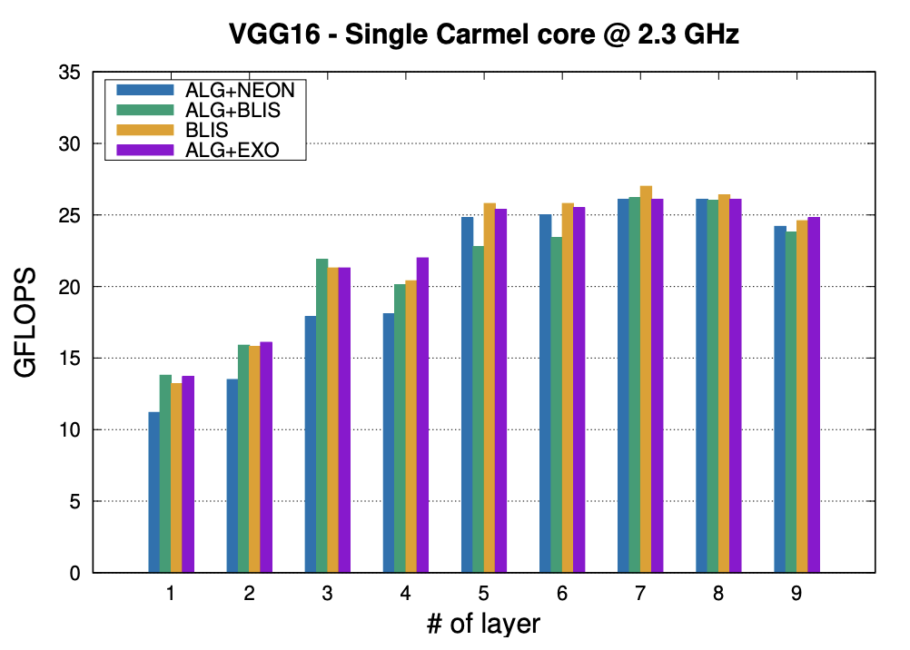
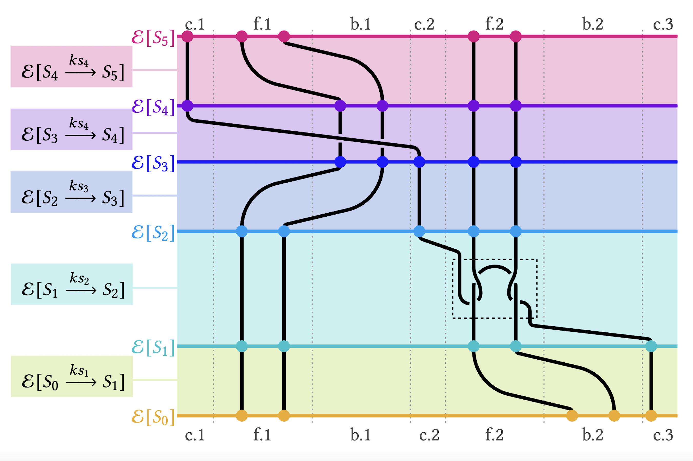
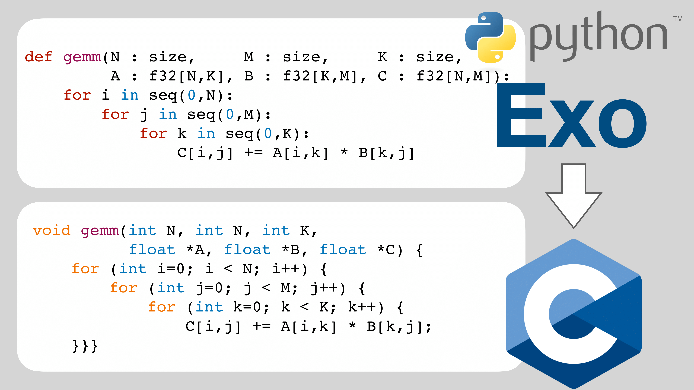
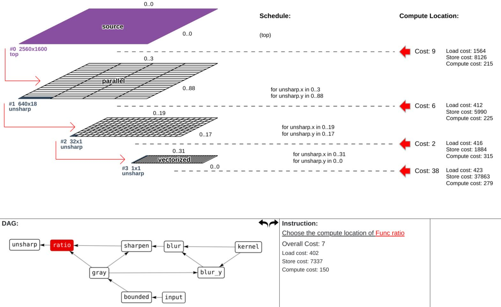
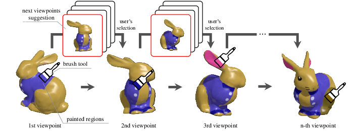

|

at Stata (2021) |
Yuka IkarashiPhD Student MIT CSAIL Office: 32-D466 E-mail: yuka at csail.mit.edu CV (last update: April 2025) Site last update: August 2025 |
|  |
Portable, High Performance Matrix Multiplication Micro-Kernels for RISC-V with Exo
Adrián Castelló, Hèctor Martínez, Sandra Catalán, Jie Lei, Yuka Ikarashi, Grace Dinh, Francisco D. Igual, Enrique S. Quintana-OrtíPDP 2025 [IEEE] |
|  |
Exo 2: Growing a Scheduling Language
Yuka Ikarashi, Kevin Qian, Samir Droubi, Alex Reinking, Gilbert Bernstein, Jonathan Ragan-KelleyASPLOS 2025 [arxiv] [MIT News] [ACM DL] |
|  |
UFO Instruction Graphs Are Machine Knittable
Jenny Lin, Yuka Ikarashi, Gilbert Bernstein, Jim McCannSIGGRAPH Asia 2024 (journal) [project page] [ACM DL] |
|  |
Tackling the Matrix Multiplication Micro-kernel Generation with Exo
Adrián Castelló, Julian Bellavita, Grace Dinh, Yuka Ikarashi, Héctor MartínezCGO 2024 [arxiv] [ACM DL] |
|  |
Semantics and Scheduling for Machine Knitting Compilers
Jenny Lin, Vidya Narayanan, Yuka Ikarashi, Jonathan Ragan-Kelley, Gilbert Bernstein, Jim McCannSIGGRAPH 2023 (journal) [project page] [ACM DL] |
|  |
Exocompilation for Productive Programming of Hardware Accelerators
Yuka Ikarashi*, Gilbert Louis Bernstein*, Alex Reinking, Hasan Genc, Jonathan Ragan-Kelley (*Equal contributions)PLDI 2022 [project page] [ACM DL] [MIT News] [Full pdf] |
|  |
Guided Optimization for Image Processing Pipelines
Yuka Takahashi, Jonathan Ragan-Kelley, Tsukasa Fukusato, Jun Kato, Takeo IgarashiVL/HCC 2021 short paper. Best Short Paper Award. [IEEE](short version) [arxiv](long version) |
|  |
PaintersView: Automatic Suggestion of Optimal Viewpoints for 3D Texture Painting
Yuka Takahashi, Tsukasa Fukusato, Takeo IgarashiSIGGRAPH ASIA 2019 technical brief [project page] [doi] [full html] |
I love traveling. I've traveled to 35 countries so far. Japan (born and lived for 21 years), UK (lived for one year) + British Virgin Islands, France, Belgium, Netherlands + Saint Maarten, Germany, Switzerland (lived for one year), Austria, Tunisia, Korea, China, Taiwan, Vietnam, US (living since 2020) + US Virgin Islands, Peru, Bolivia, Brazil, Argentina, Fiji, Luxembourg, Russia, Ukraine, Hungary, Spain, Italy, Bulgaria, Canada, Slovakia, Bosnia and Herzegovina, Croatia, Belarus, Czechia, UAE, Australia, Antigua and Barbuda, Nepal.
| I'm happy to see people are accessing my page from all over the world! |